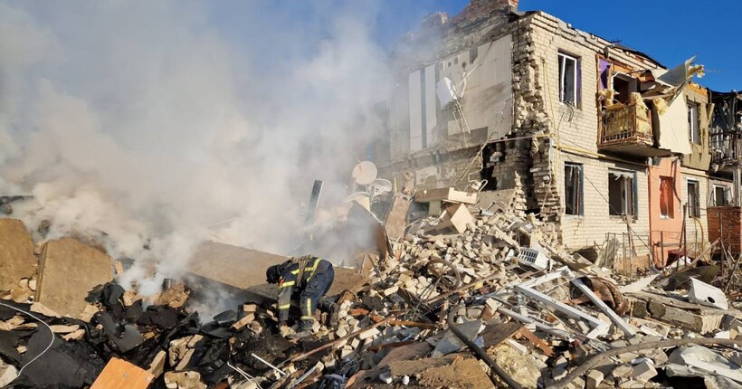

Авіаудар по Куп'янську: під завалами продовжують шукати людей

У місті Куп'янську, що в Харківській області, російські війська зруйнували двоповерхівку та п'ять приватних будинків, на які скинули авіаційні бомби. Людей продовжують шукати під завалами.
Про це повідомила пресслужба Харківської обласної прокуратури в Telegram-каналі. Як зазначається, близько 13:20 у суботу, 17 лютого, росіяни завдали авіаударів по житлових секторах міста Купʼянськ.
Чехія знайшла для України 800 тисяч снарядів, які може переправити на фронт вже за кілька тижнів - Павел
Прага потребує фінансування від партнерів, щоб доставити для потреб ЗСУ півмільйона снарядів калібру 155 мм і 300 тисяч снарядів калібру 122 мм
Президент Чехії Петр Павел знайшов спосіб, як здолати снарядний голод у Збройних силах України. Він назбирав по всьому світу для потреб українського війська аж 800 тисяч снарядів. Але є нюанс - потрібні кошти на їхнє доставлення в Україну з Чехії.
США передадуть Україні конфісковані російські активи через Естонію
Сполучені Штати Америки передадуть Естонії майже 500 тисяч доларів конфіскованих російських активів на користь України. Про це у суботу, 17 лютого, повідомили Міністерства юстиції США та Естонії.